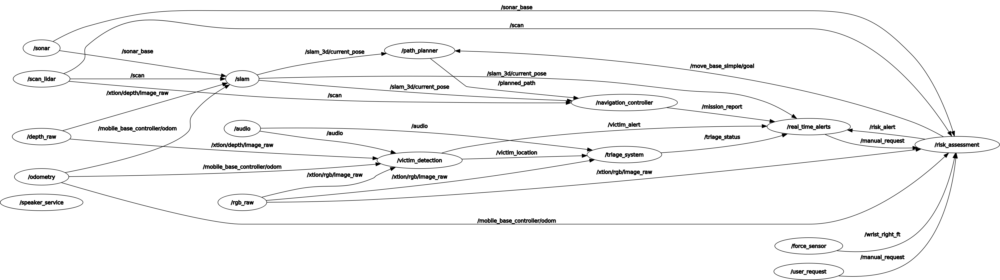

Robot Communication Flow Description
This document describes the main nodes and their communication structure for the robot’s cognitive and navigation system, based on the provided ROS graph.
{kind=link}
Victim Handling
/victim_alert: Signals the detection of a potential victim.
/victim_location: Publishes the estimated position of a detected victim.
/triage_status: Sends updated information on the victim’s condition after assessment.
Structural Assessment
/risk_alert: Publishes warnings or alerts regarding detected structural risks or hazards in the environment.
Communication
/mission_report: Summarizes and sends mission status reports, including task progress and incident findings.
Supervisor Inputs
/manual_request: Receives manual intervention or task override commands from the supervising operator.
Sensor Data Inputs
/audio: Captures audio data from the environment, potentially used for victim detection or situational awareness.
/scan: Publishes laser scanner data for obstacle detection and environment mapping.
/sonar_base: Provides sonar-based proximity data.
/odometry: Supplies odometry information to estimate movement and track robot position over time.
/xtion/rgb/image_raw: Streams raw RGB images from the Xtion camera for visual processing.
/xtion/depth/image_raw: Streams raw depth images from the Xtion camera to support 3D mapping and perception tasks.
/wrist_right_ft: Publishes force and torque measurements from the right wrist-mounted sensor, used for fine manipulation or environment interaction.